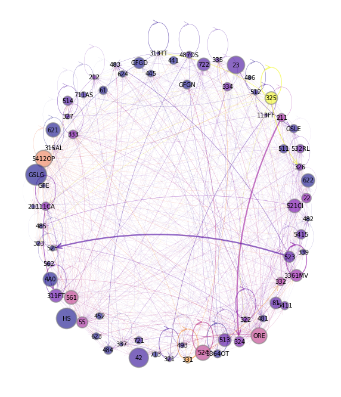

Chapter 2 - Production Code¶
We begin with some imports
import quantecon as qe
import numpy as np
import pandas as pd
import matplotlib.pyplot as plt
import matplotlib.cm as cm # import colormap stuff!
import matplotlib.colors as plc
from matplotlib import cm
import networkx as nx
Multisector Models¶
Figure 2.1: Backward linkages for 15 US sectors in 2019
Define IO functions.
def spec_rad(M):
"""
Compute the spectral radius of M.
"""
return np.max(np.abs(np.linalg.eigvals(M)))
def katz_centrality(A, b=1, authority=False):
"""
Computes the Katz centrality of A, defined as the x solving
x = 1 + b A x (1 = vector of ones)
Assumes that A is square.
If authority=True, then A is replaced by its transpose.
"""
n = len(A)
I = np.identity(n)
C = I - b * A.T if authority else I - b * A
return np.linalg.solve(C, np.ones(n))
def eigenvector_centrality(A, k=40, authority=False):
"""
Computes the dominant eigenvector of A. Assumes A is
primitive and uses the power method.
"""
A_temp = A.T if authority else A
n = len(A_temp)
r = spec_rad(A_temp)
e = r**(-k) * (np.linalg.matrix_power(A_temp, k) @ np.ones(n))
return e / np.sum(e)
def read_Z(data_file='data/csv_files/use_15_2019.csv',
N=15,
columnlist=['Name',
'Total Intermediate',
'Personal consumption expenditures',
'Private fixed investment',
'Change in private inventories',
'Exports of goods and services',
'Government consumption expenditures and gross investment',
'Total use of products']):
"""
Build the Z matrix from the use table.
* Z[i, j] = sales from sector i to sector j
"""
df1 = pd.read_csv(data_file)
df2 = df1[:N]
if columnlist != None:
df3 = df2.drop(columns=columnlist)
else:
df3 = df2
df4 = df3.replace('...', 0)
Z = np.asarray(df4.values.tolist(), dtype=np.float64)
return Z
def read_X(data_file='data/csv_files/make_15_2019.csv',
colname='Total Industry Output',
N=15):
"""
Read total industry sales column from the make table.
"""
df5 = pd.read_csv(data_file)
X = np.asarray(df5[colname])
X = X[0:N].astype(np.float)
return X
def build_coefficient_matrices(Z, X):
"""
Build coefficient matrices A and F from Z and X via
A[i, j] = Z[i, j] / X[j]
F[i, j] = Z[i, j] / X[i]
"""
A, F = np.empty_like(Z), np.empty_like(Z)
n = A.shape[0]
for i in range(n):
for j in range(n):
A[i, j] = Z[i, j] / X[j]
F[i, j] = Z[i, j] / X[i]
return A, F
def to_zero_one(x):
"Map vector x to the zero one interval."
x_min, x_max = x.min(), x.max()
return (x - x_min)/(x_max - x_min)
Define plot graph.
def plot_graph(A,
X,
ax,
codes,
node_color_list=None,
node_size_multiple=0.0005,
edge_size_multiple=14,
layout_type='circular',
layout_seed=1234,
tol=0.03): # clip entries below tol
G = nx.DiGraph()
N = len(A)
# Add nodes, with weights by sales of the sector
for i, w in enumerate(X):
G.add_node(codes[i], weight=w, name=codes[i])
node_sizes = X * node_size_multiple
# Position the nodes
if layout_type == 'circular':
node_pos_dict = nx.circular_layout(G)
elif layout_type == 'spring':
node_pos_dict = nx.spring_layout(G, seed=layout_seed)
elif layout_type == 'random':
node_pos_dict = nx.random_layout(G, seed=layout_seed)
elif layout_type == 'spiral':
node_pos_dict = nx.spiral_layout(G)
# Add the edges, along with their colors and widths
edge_colors = []
edge_widths = []
for i in range(N):
for j in range(N):
a = A[i, j]
if a > tol:
G.add_edge(codes[i], codes[j])
edge_colors.append(node_color_list[i])
width = a * edge_size_multiple
edge_widths.append(width)
nx.draw_networkx_nodes(G,
node_pos_dict,
node_color=node_color_list,
node_size=node_sizes,
edgecolors='grey',
linewidths=2,
alpha=0.6,
ax=ax)
nx.draw_networkx_labels(G,
node_pos_dict,
font_size=10,
ax=ax)
nx.draw_networkx_edges(G,
node_pos_dict,
edge_color=edge_colors,
width=edge_widths,
arrows=True,
arrowsize=20,
alpha=0.6,
ax=ax,
arrowstyle='->',
node_size=node_sizes,
connectionstyle='arc3,rad=0.15')
Set params.
codes = ( 'ag',
'mi',
'ut',
'co',
'ma',
'wh',
're',
'tr',
'in',
'fi',
'pr',
'ed',
'ar',
'ot',
'go')
Z, X = read_Z(), read_X()
A, F = build_coefficient_matrices(Z, X)
ecentral = eigenvector_centrality(A)
ecentral_color_list = cm.plasma(to_zero_one(ecentral))
/tmp/ipykernel_9897/2792980170.py:70: DeprecationWarning: `np.float` is a deprecated alias for the builtin `float`. To silence this warning, use `float` by itself. Doing this will not modify any behavior and is safe. If you specifically wanted the numpy scalar type, use `np.float64` here.
Deprecated in NumPy 1.20; for more details and guidance: https://numpy.org/devdocs/release/1.20.0-notes.html#deprecations
X = X[0:N].astype(np.float)
fig, ax = plt.subplots(figsize=(8, 10))
plt.axis("off")
plot_graph(A, X, ax, codes,
layout_type='spring', # alternative layouts: spring, circular, random, spiral
layout_seed=5432167,
tol=0.0,
node_color_list=ecentral_color_list)
plt.show()

Figure 2.2: Network for 71 US sectors in 2019
codes_71 = ('111CA',
'113FF',
'211',
'212',
'213',
'22',
'23',
'321',
'327',
'331',
'332',
'333',
'334',
'335',
'3361MV',
'3364OT',
'337',
'339',
'311FT',
'313TT',
'315AL',
'322',
'323',
'324',
'325',
'326',
'42',
'441',
'445',
'452',
'4A0',
'481',
'482',
'483',
'484',
'485',
'486',
'487OS',
'493',
'511',
'512',
'513',
'514',
'521CI',
'523',
'524',
'525',
'HS',
'ORE',
'532RL',
'5411',
'5415',
'5412OP',
'55',
'561',
'562',
'61',
'621',
'622',
'623',
'624',
'711AS',
'713',
'721',
'722',
'81',
'GFGD',
'GFGN',
'GFE',
'GSLG',
'GSLE')
Z_71, X_71 = read_Z(data_file='data/csv_files/use_71_2019.csv',
N=71,
columnlist=['Unnamed: 0', 'T001', 'F010', 'F02E', 'F02N',
'F02R', 'F02S', 'F030', 'F040', 'F06C', 'F06E',
'F06N', 'F06S', 'F07C', 'F07E', 'F07N', 'F07S',
'F10C', 'F10E', 'F10N', 'F10S', 'T019']), read_X(data_file='data/csv_files/make_71_2019.csv', N=71)
A_71, F_71 = build_coefficient_matrices(Z_71, X_71)
ecentral_71 = eigenvector_centrality(A_71)
ecentral_color_list_71 = cm.plasma(to_zero_one(ecentral_71))
/tmp/ipykernel_9897/2792980170.py:70: DeprecationWarning: `np.float` is a deprecated alias for the builtin `float`. To silence this warning, use `float` by itself. Doing this will not modify any behavior and is safe. If you specifically wanted the numpy scalar type, use `np.float64` here.
Deprecated in NumPy 1.20; for more details and guidance: https://numpy.org/devdocs/release/1.20.0-notes.html#deprecations
X = X[0:N].astype(np.float)
fig, ax = plt.subplots(figsize=(10, 12))
plt.axis("off")
plot_graph(A_71, X_71, ax, codes_71,
node_size_multiple=0.0005,
edge_size_multiple=4.0,
layout_type='spring', # alternative layouts: spring, circular, random, spiral
layout_seed=5432167,
tol=0.01,
node_color_list=ecentral_color_list_71)
plt.show()

Figure 2.4: The Leontief inverse 𝐿 (hot colors are larger values)
def plot_matrices(matrix,
codes,
ax,
font_size=12,
alpha=0.6,
colormap=cm.viridis,
color45d=None,
xlabel='sector $j$',
ylabel='sector $i$'):
ticks = range(len(matrix))
levels = np.sqrt(np.linspace(0, 0.75, 100))
if color45d != None:
co = ax.contourf(ticks,
ticks,
matrix,
# levels,
alpha=alpha, cmap=colormap)
ax.plot(ticks, ticks, color=color45d)
else:
co = ax.contourf(ticks,
ticks,
matrix,
levels,
alpha=alpha, cmap=colormap)
#plt.colorbar(co)
ax.set_xlabel(xlabel, fontsize=font_size)
ax.set_ylabel(ylabel, fontsize=font_size)
ax.set_yticks(ticks)
ax.set_yticklabels(codes)
ax.set_xticks(ticks)
ax.set_xticklabels(codes)
I = np.identity(len(A))
L = np.linalg.inv(I - A)
fig, ax = plt.subplots(figsize=(6.5, 5.5))
plot_matrices(L, codes, ax, alpha=0.85)
plt.show()

Figure 2.5: Propagation of demand shocks via backward linkages
sim_length = 6
N = len(A)
d = np.random.rand(N) # np.zeros(N)
d[6] = 1 # positive shock to agriculture
x = d
x_vecs = []
for i in range(sim_length):
x_vecs.append(x)
x = A @ x
fig, axes = plt.subplots(3, 2, figsize=(8, 10))
axes = axes.flatten()
for ax, x_vec, i in zip(axes, x_vecs, range(sim_length)):
ax.set_title(f"round {i}")
x_vec_cols = cm.plasma(to_zero_one(x_vec))
plot_graph(A, X, ax, codes,
layout_type='spring', # alternative layouts: spring, circular, random, spiral
layout_seed=342156,
node_color_list=x_vec_cols,
node_size_multiple=0.00028,
edge_size_multiple=0.8)
plt.tight_layout()
plt.show()

Figure 2.6: Eigenvector centrality of across US industrial sectors
ecentral = eigenvector_centrality(A)
ecentral_color_list = cm.plasma(to_zero_one(ecentral))
fig, ax = plt.subplots()
ax.bar(codes, ecentral, color=ecentral_color_list, alpha=0.6)
ax.set_ylabel("eigenvector centrality", fontsize=12)
plt.show()

Figure 2.8: Output multipliers across 15 US industrial sectors
omult = katz_centrality(A, authority=True)
omult_color_list = cm.plasma(to_zero_one(omult))
fig, ax = plt.subplots()
ax.bar(codes, omult, color=omult_color_list, alpha=0.6)
ax.set_ylabel("Output multipliers", fontsize=12)
plt.show()

Figure 2.9: Forward linkages and upstreamness over US industrial sectors
upstreamness = katz_centrality(F)
upstreamness_color_list = cm.plasma(to_zero_one(upstreamness))
fig, ax = plt.subplots(figsize=(8, 10))
plt.axis("off")
plot_graph(F, X, ax, codes,
layout_type='spring', # alternative layouts: spring, circular, random, spiral
layout_seed=5432167,
tol=0.0,
node_color_list=upstreamness_color_list)
plt.show()

Figure 2.10: Relative upstreamness of US industrial sectors
fig, ax = plt.subplots()
ax.bar(codes, upstreamness, color=upstreamness_color_list, alpha=0.6)
ax.set_ylabel("upstreamness", fontsize=12)
plt.show()

General Equilibrium¶
Figure 2.11: GDP growth rates and std. deviations (in parentheses) for 8 countries
No code in repo
Figure 2.14: Hub-based Katz centrality of across 15 US industrial sectors
kcentral = katz_centrality(A)
kcentral_color_list = cm.plasma(to_zero_one(kcentral))
fig, ax = plt.subplots()
ax.bar(codes, kcentral, color=kcentral_color_list, alpha=0.6)
ax.set_ylabel("Katz hub centrality", fontsize=12)
plt.show()